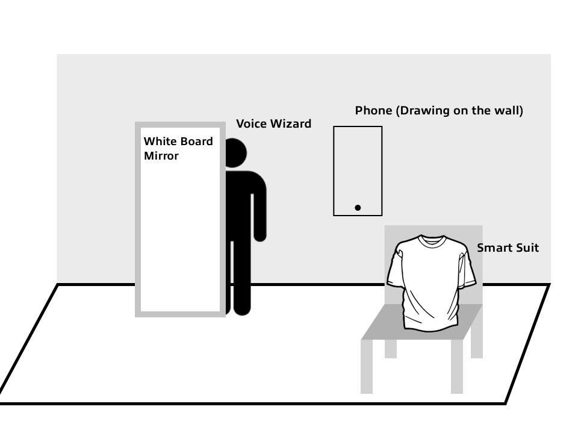
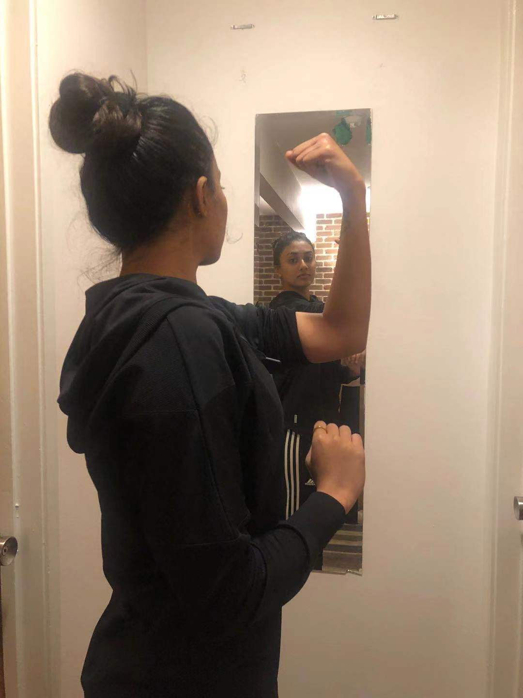
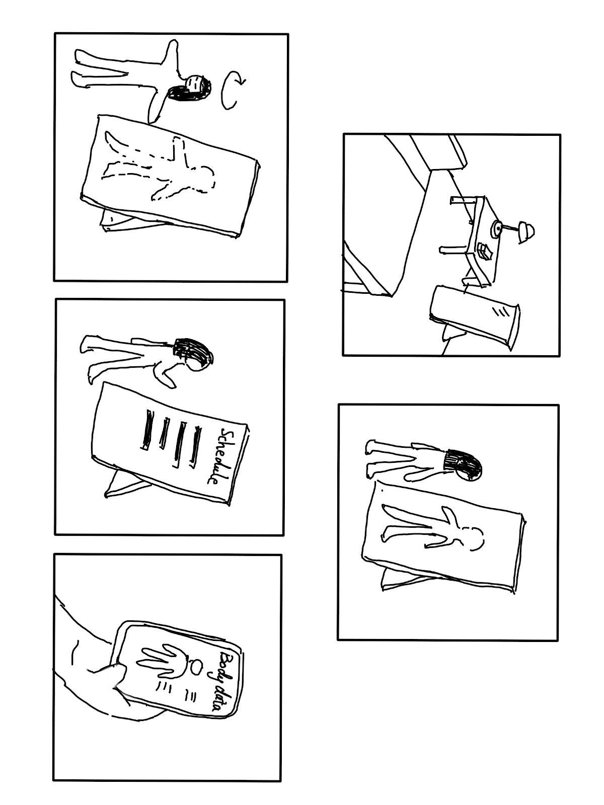
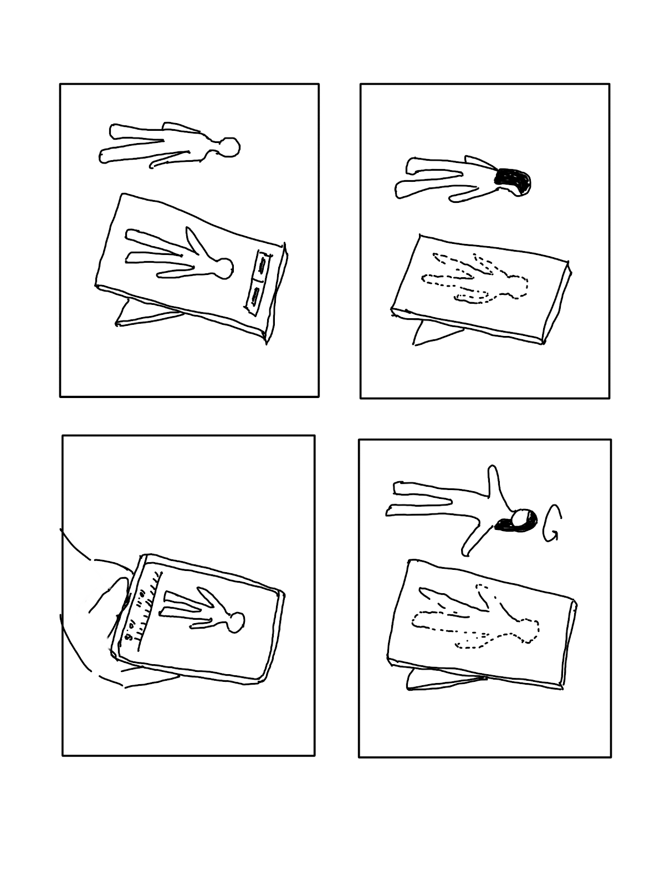

MILESTONE 3
Experience Prototyping Results & Demo Plans
Introduction
In the previous milestone that we have completed, we were able to gather many useful insights regarding user needs and perceptions of potential solutions. Among three proposed concepts from the previous milestone, most of user research participants and our peers indicate that they feel more comfortable using mirror for seeing their body shapes, either seeing shapes through smart suit or smart wall could be bizarre. Therefore, we decided to focus on and further refine the smart mirror concept.
In this milestone, we aim to gain a deeper understanding regarding users’ reactions towards an emerging technology and how does this technology affect users behaviors and values. We employed the user enactments approach, created physical forms to simulate the experience under similar environments for gaining more in-depth insights regarding the issues and design opportunities the smart mirror concept.
STUDY DESIGN
We brainstormed and designed features for the smart mirror keeping in mind the findings we got from milestone 2, for which we conducted a diary study and interview for learning about user needs. In this milestone, we defined our research objectives based on user needs we found previously as well as concerns that users have raised; specifically, we are trying to answer the following questions in this study:
- What features in the mirror are most valuable and useful for user?
- How do users perceive privacy issue of the mirror concept? Do they feel invasive with this device recording their bodies?
- What is the right balance between sending necessary push notifications for motivational purpose and avoiding making users feeling annoyed?
- What is the most appropriate and comfortable way of displaying body data that avoid users having adverse feelings towards the product and their bodies?
Once we addressed the above concerns, we would like to ask the rest of the research questions:
- What is people’s goal through workout and diet habits?
- How do people keep track of their workout and diet outcomes?
- When and in what context would they think of their body shapes?
- What behaviors and emotions result from the changes in body shape?
Users
We recruited five users for the user enactments students, all are UMSI students. Four of the participants are international students and one is American student; two are males and three are female all in their twenties. All target users are people who work out constantly and aim to change their body shapes. Not all of the five participants are ideal target users for the testing since only three of our users work out and pay attention to the changes in their body shapes. The other two participants do casual work out from time to time but don’t pay too much attention to changes in their body shapes. The value provided by our product, which allows users to intuitively see their progress and keep motivated, may not be attractive to them. However, they still provide valuable insights since they are tech-savvy and have interests in human interaction with advanced technology. The comments they provided still help us determine if our design is appropriate and useful in different scenarios.
| Name | U1 | U2 | U3 | U4 | U5 |
|---|---|---|---|---|---|
| Gender | Female | Female | Female | Male | Male |
| Age | 23 | 23 | 24 | 22 | 26 |
User Enactment
We designed six enactments, grouping them into three main use cases. Two initial enactments were conducted in the study rooms of North Quad. According to two initial feedback, users felt our product is more likely to be used in the restroom of a gym setting rather than in an individual bedroom and the smart mirror is a better choice for them to use as they are more familiar with it. Therefore, for the following three enactments, we decided to move it to the fourth floor of North Quad, which is a public space that created a better simulation of the gym setting and we decided to focus on the design of the mirror and abandon the idea of “smart suits”.
The latter three enactments were conducted in the lounge area on the fourth floor of North Quad. The smart mirror concept involves cross-devices usage of a mirror and a smartphone and interactions between users and devices include touch screen and voice command. In order to simulate the experience, our settings for user enactments contains a full-body whiteboard to represent a mirror, a suit and a phone frame drew on the wall (the smart suit concept were given as an option if users prefer smart suit over smart mirror). We set up fake speakers and sensors on the whiteboard and placed instructions and implements on sticky paper to represent the mirror and phone’s instructions to users.
 In our five user enactments, we used three different scenarios, product onboarding, regular measuring, tracking and comparison to previous date, and a deviate scenario in which some sudden events may disrupt the workout and tracking routine, to represent different use cases with different user needs, which were identified from user research.
1. Onboarding Experience
For the product onboarding experience, during which the system measure initial body data and working on system settings. We led the participant in the environment, and let participants select in which environment (private room or gym or other spaces they prefer). We told users that they have purchased our product and you want to try it out the first time. So they opened up the package, installed our app, and already connected the app to our product. After signing up for the account, the app tried to get more information from them. In this phase, user interact with mirror through voice interaction, the voice command prompts users to adjust their movements to pictures. Then the system will display the initial body data on the mirror, then help user schedule periodical measurement using voice command.
We then repeated this scenario but some voice interaction with touch screen interaction on the mobile phone. After body shape scanning and analysis, measurements will be displayed on the phone rather than on the mirror. The participants will not be seeing their body shapes on the mirror, rather, everything relating to their body data will be shown on the phones. Scheduling periodical measurements is also done on the phone with a touch screen interaction.
The reason we used voice command as an option is because several users indicate that they don’t like to directly interact with the mirror in previous phase since the mirror may be dirty and they feel more familiar with using mobile phone. After the two UEs, we asked participants we asked participants what are their thoughts about the voice interaction as opposed to touch screen and what are their preferences for the way and on what device their body shapes and data being displayed.
2. Regular routine
In the regular tracking and comparison scenario, we also designed two options of how users interact with the product. With the mirror only and voice command option, we told participants that they have just completed work out for 2 hours and they haven’t checked their body changes for a while and they want to see body data and record the process. The device will show full body data and allow users to select a certain part of their body that they are particularly interested in on the mirror. The system then will highlight the changes. Now users are interested in comparing today’s data to a previous date, they use voice command to ask the a mirror compare today’s measurements to either the previous time or the first time. We were only able to provide two options for the previous date because the limitations of voice command.
The same scenario was played again using the touch screen and mobile phone option. In this option, users are seeing their body data on the phones, they are able to zoom in a specific part they are interested in to see the highlighted changes, and are able to choose from any previous dates that they have recorded their process for comparison.
In this part, we asked used their thoughts on seeing the changes on their body measurements. We are interested to know if negative or positive changes would trigger any emotions towards the product, their bodies or their fitness plan. We also asked participants about if choosing a specific date for comparison is valuable or comparing with last time or first time would be sufficient.
3. Deviate scenario
In this scenario, user’s fitness plan and tracking procedure may be interrupted by some sudden events, and we are interested in understanding how to design some motivational element that keep users stick to their schedule. We told users that today is a date on which they are supposed to workout and track their progress into the system. Users were given a mobile phone and the push notification will be sent and prompts them to use the mirror. The push notification will say “Hey, today is a workout and tracking date! Remember to track your progress for keeping to your routine!” The system will also show a screen with records of their previous tracking with a hope that user would want to form a pattern and not disrupt the existing plan. In the related UEs, we asked participants their thoughts about receiving notifications. Do they find the information we sent them helpful for keeping with their routine and motivated? Also, do you like the tone that our system use while sending them notifications? If no, what kind of tone would like to see when interacting with our product.
STUDY RESULTS
Privacy: Users are highly aware of protecting individual privacy
-
The privacy concerns influence the selection of using environment, which could affect our later decision on user scenario.
- 3 participants would like to have the product in the gym(public space) due to the convenience and budget concerns.
- 2 participants prefers more private spaces, and responds that body measurement is a type of private action
-
The user experience is related to the comfort level of the privacy.
- 2 participants mentioned that they were worried about the privacy issue of personal body image(possibly only with underwear) and related data
- 1 participant doesn’t want to see his own face in the mirror /prefer his face to be blurred on purpose to protect his identity
- 1 participant mentioned that voice is privacy concern(ex. do not want other people to hear).
Interaction Type: Hand gesture could integrate with voice command while directly interacting with mirror, with mobile application as an associated option
-
Participants prefer using hand gestures to give commands and instructions such as clicking buttons and switching between screen pages.
- 3 participants put hand gesture as their first option on interacting action
- 1 participant responded that most of the time she would like to have touch screen options or use gestures to swipe
- 1 participant comments that other than voice interaction, gesture can be an advanced way for more sophisticated interactions.
-
Participants want visual display and voice command to access the collected data and information from our product.
- 1 participant responded that the voice command could always be there with the ability of volume adjustments(ex. headphone connection-bluetooth); but not everything are voice command(do not want to talk all the time, ex. Go to the next screen))
- 1 participant would like the mirror to speak out his body changes instead of checking it one by one himself.
- 1 participant mentioned that people maybe not that fluent with the language; you do not know what exactly to say(what if the product say, I do not understand) so voice command could not be the only option for interaction.
-
Participants would like to get notifications and backup data from the mobile application.
- 2 participants want notifications on the app
- 1 participant would like to be able to connect to mirror and make settings but do not want to have other interactions in two devices; all information displays in the mirror; phone can store all the data as a backup
Nature of feedback: Feedback(positive and negative) should be able to prompt positive emotions and actions.
-
Positive feedback:
- 2 participants want the product to highlight the changes so that it’s clear to see
- 1 participant responded that she wants a progress bar and play music could be one way on the motivation(people always play music with their headphones while working out)
-
Negative feedback:
- All participants want positive reinforcements when seeing no progress or negative feedback
- 1 participant comments that it is a kind of motivation when seeing the data goes back.
- 1 participant comments that only showing the shape change is limited. It’s possible that his body shape doesn’t change a lot but his physical data changes significantly.
Role of Mirror: Users want the mirror to display information, have the easy-to-use interaction and delivers incentive messages.
-
We provided options of the smart mirror and the smartsuit, and all participants selected the smart mirror.
- 1 participant preferred mirror option than the body suits because of convenience on measuring; do not want to take on another clothes after working out.
- 3 participants responded that more familiar of using mirror to capture/see body shapes.
- 1 participant would like to have an immersive experience to have most of his interactions using the mirror.
IDEATION AND SELECTION
After analyzing and discussing the results and findings we gathered from the user enactments, we conducted another round of ideations for the detailed features and interactions of our systems.
We developed several criteria based on the study results and put the new ideas and initial ideas altogether to evaluate all of them.
We evaluated new interactions combining hand gesture, voice command and cellphone remote control learning from the user enactments and try to match them to the best-suit situation. We also considered which one - the phone or the mirror could be a better choice for some of our features according to the study results we found. Based on the study results, we also ideated new features such as sound indicating the measurement process and voiceover assistant.
The matrix is shown below:
1 - 5 : low - high
| Feature Priority | Affordance | Privacy | Not intrusive nature | Technical feasibility | Motivating | Not stress triggering | |
|---|---|---|---|---|---|---|---|
| Body shapes scanning | 5 | 3 | 1 | 3 | 2 | 3 | 2 |
| Sound during scanning | 5 | 5 | 4 | 3 | 5 | 5 | 4 |
| Body measurements Display | 4 | 5 | 2 | 4 | 4 | 3 | 1 |
| Location prompts | 5 | 4 | 4 | 3 | 4 | 4 | 5 |
| Routine scan scheduling | 3 | 4 | 4 | 2 | 5 | 5 | 3 |
| App Data History | 5 | 5 | 3 | 5 | 5 | 5 | 3 |
| Mirror checkpoint data | 3 | 3 | 3 | 5 | 5 | 5 | 3 |
| Historical data compare | 5 | 5 | 3 | 5 | 5 | 5 | 2 |
| Highlight changes | 5 | 4 | 3 | 5 | 3 | 5 | 2 |
| App notification | 4 | 5 | 5 | 1 | 5 | 5 | 3 |
| Voiceover body changes | 3 | 5 | 2 | 3 | 4 | N/A | 2 |
| Calendar | 3 | 5 | 5 | 5 | 5 | 4 | 4 |
| Hand Gesture integration | 3 | 2 | 5 | N/A | 3 | N/A | N/A |
System Proposal
Our systems mainly consists of two parts:
-
Smart mirror: mirror itself is mainly used to help users measure the body shape, display the temporal data of the user and simple schedule. The interactions combined hand gesture with voice command which will be talked about later in each of the features.
-
Mobile Application: the application connected to the mirror stored the data gathered from the mirror and mainly used for users to retrieve their historical body data and compare their change of body data.
The features of System:
-
Body measurement process: The mirror will use voice and also visual indicator to suggest users to move to the required position and adjust their body gesture to let us better record his or her body shape data. After measurement, it will show users the current body data information as the overlay on the mirror at the position of the body part of your reflection.
-
Schedule measurement: Users will use hand gesture to schedule the frequency of the measurement which will result in the notification in our mobile application.
-
Historical Data Compare: Users can check their body data whenever they want on the mobile application and also compare the data along the timeline.
-
Application Notification: Users will receive notification reminding them to measure the body through the mobile application.
Demo Proposal
We are still exploring technologies that could enable us to track users’ body shape and display mock data to users more seamlessly. Two options we are considering are Runway ML and ml5.js. The former allows us to discover, create, and use artificial intelligence capabilities in motion recognition. The latter has similar capacities but only on the web browser. We would like to take more time to try out these two options and determine if we are going to proceed with these two options.
If not, we also have a plan B. Basically, we will need a digital device with large screen. It is used as the mockup of the smart mirror that users directly interact with. We will use an iPad to screen mirror the content on the iPad to that large-screen digital screen. Other than that, we will provoke users to use InVision prototype to receive app information when needed.
Storyboards
Storyboard 1
Jane is a 22-year-old university student who strives to live a healthy life by changing their body shapes. The challenges she has is lack of motivation in maintaining motivated and being aware of if they are on the right track. She decided to purchase our product. This is the first day after she bought the smart mirror. She stood in front of the mirror in her bedroom to create her body data profile. The following storyboard illustrates the scenario and the use of the mirror.
Storyboard 2
It has been a month since Jane brought the smart mirror. Through this month, she already used the smart mirror weekly. This is the day she went back home from the gym. She stood in front of the mirror to scan her body. With the help of mirror’s analysis and instructions, she was able to compare her current body data with the past ones and know her progress.
Conclusion
At the end of this Milestone, we have a good idea of the features that should be incorporated into the mirror as well as its behavior. Based on it, we would like to take more time and resources to think what technologies are we gonna to do the demo and prepare for the UI screens.